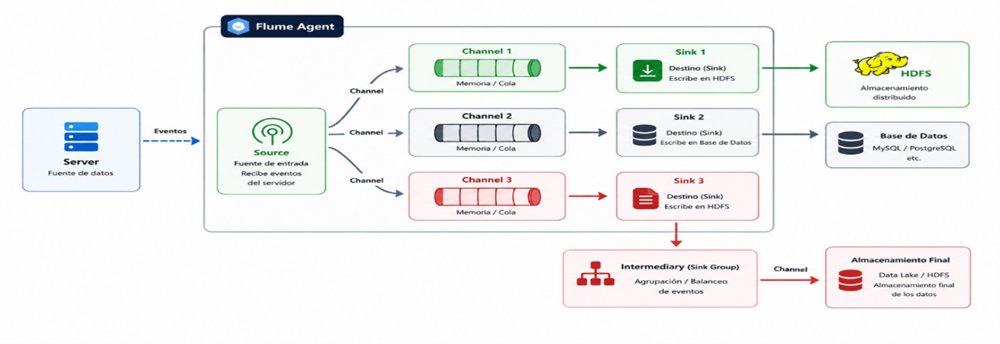

Capítulo 3. Ecosistema de Hadoop
Estructura de Hadoop
Estructura de Hadoop
La inyección de datos (Data Ingestion) consiste en transferir información desde sistemas externos hacia un clúster Hadoop para su almacenamiento, procesamiento y análisis.
La inyección de datos permite cargar información desde diferentes orígenes hacia HDFS u otros componentes del ecosistema Hadoop para su posterior procesamiento mediante herramientas como MapReduce, Spark, Hive o Pig.

Figura. Flujo general de inyección de datos hacia Hadoop.
hdfs dfs -put o hdfs dfs -copyFromLocal.
Apache Flume es una herramienta distribuida desarrollada en Java que permite recopilar, agregar y transportar grandes volúmenes de datos desde diferentes fuentes hacia HDFS.
Está especialmente orientada a la captura de logs, eventos y datos generados de forma continua por aplicaciones o servidores.

Figura. Arquitectura Source → Channel → Sink de Apache Flume.
| Componente | Función |
|---|---|
| Source | Recibe los eventos desde la fuente de datos. |
| Channel | Almacena temporalmente los eventos. |
| Sink | Envía los datos al destino final (HDFS, HBase, etc.). |
Apache Kafka es una plataforma distribuida de procesamiento de eventos en tiempo real desarrollada por Apache Software Foundation.
Kafka permite publicar, almacenar y consumir millones de mensajes por segundo, proporcionando alta disponibilidad y tolerancia a fallos.

Apache NiFi es una plataforma visual para automatizar el flujo de datos entre sistemas heterogéneos.
Permite construir canales de ingestión de datos mediante una interfaz gráfica, facilitando la recopilación, transformación y envío de información hacia HDFS.

Apache Sqoop es una herramienta diseñada para transferir datos entre bases de datos relacionales y el ecosistema Hadoop.
Su principal objetivo consiste en importar grandes volúmenes de datos desde sistemas RDBMS hacia HDFS, Hive o HBase, así como exportar información desde Hadoop hacia bases de datos relacionales.

| Tecnología | Origen | Destino | Uso principal |
|---|---|---|---|
| HDFS | Archivos locales | HDFS | Carga manual |
| Flume | Logs y eventos | HDFS | Captura continua |
| Kafka | Streaming | Consumidores | Tiempo real |
| NiFi | Múltiples fuentes | HDFS | Automatización visual |
| Sqoop | Bases de datos | HDFS / Hive | Datos relacionales |
El ecosistema Hadoop dispone de múltiples mecanismos para incorporar datos desde diferentes fuentes. Mientras que Flume está orientado a la captura de eventos y logs, Kafka permite el procesamiento en tiempo real, NiFi facilita la automatización de flujos de datos mediante una interfaz gráfica y Sqoop constituye la solución más adecuada para integrar bases de datos relacionales con HDFS y Hive.